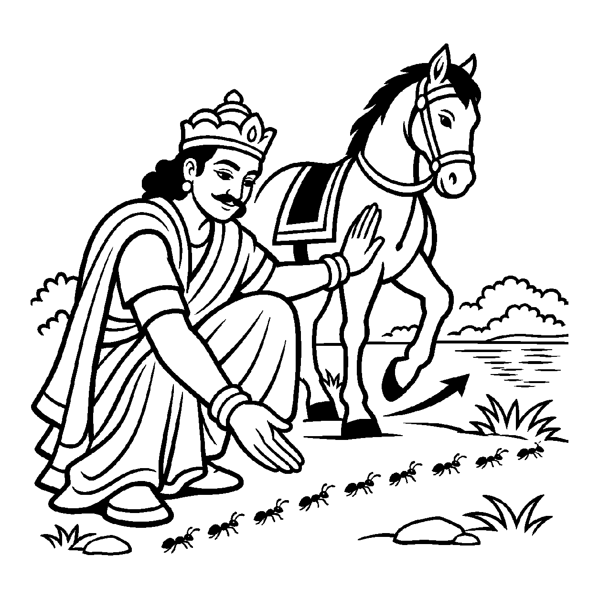

જુદી જુદી વાડીમાં ઊગેલા વટ, પીપળ અને લીમડાના વૃક્ષો અલગ દ્રવ્યો છે, છતાં તેમને 'વૃક્ષ'ના સામાન્ય વર્ગમાં ગણી શકાય છે. તેવી જ રીતે અનંત ચેતન જીવો અલગ અલગ જીવદ્રવ્યો છે; 'જીવ' સંજ્ઞા તેમના સામાન્ય જીવત્વને એક વર્ગમાં ઓળખાવે છે, તેમને એક જ આત્મામાં ભેળવતી નથી. આ રીતે સજાતીય દ્રવ્યોને સામાન્ય નામે ગ્રહણ કરવું તે 'અપરસંગ્રહ (અપરસંગ્રહ) દ્રવ્યાર્થિકનય' કહેવાય છે.
જૈન ન્યાયમાં પરસંગ્રહ પછીના સંગ્રહને અવાનસત્તા અથવા 'અપર/અપર સંગ્રહ' કહે છે. આ નય અજીવ, પુદ્ગલ કે અન્ય દ્રવ્યોને છોડીને કેવળ 'જીવત્વ' સામાન્ય લક્ષણ વડે સિદ્ધ, સંસારી, દેવ, મનુષ્ય, તિર્યંચ અને નિગોદ સહિતના જીવોને 'જીવ' વર્ગમાં ગણે છે. આ વર્ગીકરણમાં દરેક જીવ પોતાનું સ્વતંત્ર જીવદ્રવ્ય રહે છે; તેમની સંખ્યાગત એકતા સૂચવાતી નથી.
આ નય સમજાવે છે કે બહારથી દેખાતા દેહ, ગતિ, ઇન્દ્રિય કે જાતિના ભેદો ભલે અનંત હોય, પણ ભીતરમાં રહેલું ચેતના-તત્ત્વ સહુમાં એક સરખું દ્રવ્ય-સ્વરૂપ ધરાવે છે. આ જ દ્રષ્ટિ સર્વભૂતહિત અને અહિંસાની જનની છે.
અજીવ સહુ અળગા કરી, ચેતન સંગ્રહ થાય;
અવાનસત્તા જીવની, અપરસંગ્રહ ગવાય.
જીવ અને અજીવના મૂળભૂત ભેદને સમજી ચૈતન્ય સ્વરૂપમાં જ આત્મભાવ સ્થાપવો.

ચક્રવર્તી સનત્કુમાર પોતાના અશ્વ પર સવાર થઈને નગરચર્યાએ નીકળ્યા હતા. રસ્તામાં એક સરોવર કિનારે ઘોડાના પગ તળે કીડીઓનો એક મોટો રાફડો કચડાઈ જવાની અણી પર હતો. સાથી સૈનિકોએ કહ્યું, "મહારાજ, આગળ વધો, આ તો કેવળ ક્ષુદ્ર કીડીઓ છે! સમ્રાટના વિજયપ્રયાણ સામે આ તુચ્છ જંતુઓનું શું મૂલ્ય?" સમ્રાટના પગ ત્યાં જ થંભી ગયા. તેમના હૃદયમાં તીવ્ર મનોમંથન શરૂ થયું: એક બાજુ સામ્રાજ્યનો વૈભવ અને બીજી બાજુ એક સામાન્ય કીડીનો જીવ! જીવોના આ બાહ્ય ભેદભાવ અને ઉચ્ચ-નીચના આયામોએ તેમના મનમાં ઊંડો પ્રશ્નાર્થ જગાડ્યો: "શું સત્તા અને દેહના કદથી આત્માનું મૂલ્ય નક્કી થાય? આ ભેદભાવના મૂળમાંથી મુક્તિ ક્યાં?"
તે જ ક્ષણે સમ્રાટે અશ્વ પરથી નીચે ઊતરીને અપરસંગ્રહ નયનું સ્મરણ કર્યું. તેમણે સૈનિકોને સ્નેહથી કહ્યું, "જુઓ, અપરસંગ્રહ દ્રષ્ટિથી વિચાર કરો. આ કીડીના લઘુ દેહમાં પણ એ જ જીવત્વ અને ચેતના ધબકે છે જે મારા આ ચક્રવર્તીના દેહમાં છે. ચેતન સામાન્ય દ્રષ્ટિએ હું અને આ કીડી બંને અખંડ 'જીવ' છીએ. બાહ્ય પર્યાય જુદો હોઈ શકે, પણ પ્રાણ અને સુખની ચાહના બંનેમાં સમાન છે." સમ્રાટે અશ્વનો માર્ગ બદલી નાખ્યો અને કીડીઓને અભયદાન આપ્યું. આ ચૈતન્ય-સંગ્રહના દર્શનથી સમ્રાટના અંતરમાં અપૂર્વ કરુણા અને પરમ સંતોષ છવાઈ ગયો.
જો આ નય કદાગ્રહી બને, તો મનુષ્ય સાધક અને અસાધક, મુક્ત અને સંસારી, જ્ઞાની અને અજ્ઞાની વચ્ચેના આત્મિક ગુણભેદોનો અસ્વીકાર કરવા લાગે છે. જો પુરુષાર્થ અને કર્મના ભેદોને ન ગણીએ, તો સાધનાનો માર્ગ જ રૂંધાઈ જાય છે.
આ જ નય જ્યારે વિવેકપૂર્વક પ્રયોજાય છે, ત્યારે તે 'આત્મવત્ સર્વભૂતેષુ' ની પરમ ભાવના જગાડે છે. તે સાધકને દરેક પ્રાણી પ્રત્યે કરુણા, સમાનતા અને વાત્સલ્ય કેળવીને વિશ્વશાંતિ તરફ દોરી જવાનો રાજમાર્ગ બતાવે છે.